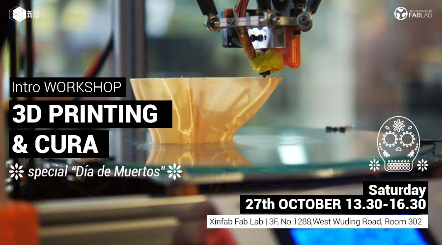
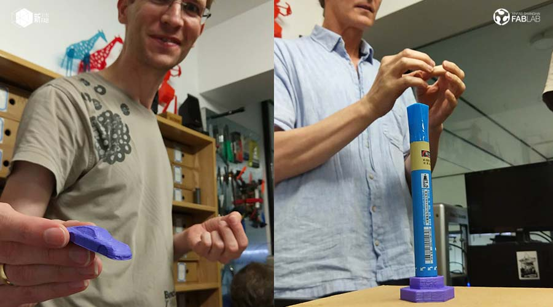

WORKSHOP
[27.10.2018] INTRO WORKSHOP: 3D Printing & Cura-Special "Día de Muertos"

When: October 27th (13.30-16.30)
Where: Xinfab - Wuding West Rd. 1288, Room 302, DoArt Space, Jing'an District | Xinfab-静安区武定西路1288号302,DoArt Space
Price: 190RMB on AliPay (195RMB WeChat - Wechat charges us a fee)
On Saturday 27th of October, we will be having a workshop intro to 3D PRINTING inspired by the "Día de Muertos".
You will learn how to use XinFab's printers, set up your model in CURA (we will use an opensource website to download a model and use it as an example) and then learn how to 3D print it so that you can come and DIY next time!
Here are some of the spooky "Día de Muertos" skulls we will be printing:
Things you should bring:
-Laptop and charger
-Mouse (without it is not easy!)
-Install CURA version 3.3.1 in your laptop CURA
-Your passion, curiosity, and questions
Max: 7 students
///////////////////////////////////
WORKSHOP SCHEDULE
PART 1 - Introduction to FabLabs
-Digital Fabrication
-Rapid Prototyping
PART 2 - Introduction to 3D Printing
-3D printing technology, machines, softwares and materials for 3D printing, applications of 3D Printing
-Download a 3d model from Thingiverse
PART 3 - Introduction to CURA
-Introduction to CURA
-How to set up your model
-How to judge whether a model is printable or notA
-How to optimize the settings for higher quiality and faster prints
-Possible problems and solutions
PART 4 - 3D Print!
-3D print your model!*
*Because of time limitations and because we want each participant to print a model, we're going to follow the guidelines for the settings of your print that we will provide during the lesson.

///////////////////////////////////
HOW TO SIGN UP
SIGN UP DEADLINE: FRIDAY, OCTOBER 26 (morning)
// ALIPAY (190 RMB):
transfer the workshop fee to pay@xinfab.com (please indicate your phone number on the payment details so we can contact you!)
// WECHAT (195 RMB - Wechat charges a fee)
Enter our shop with your phone via this QR code and proceed to payment with Wechat Wallet

Questions? Send an email to info@xinfab.com.
///////////////////////////////////
ABOUT THE TEACHER

Pamela Martello is a Mexican jewelry designer and XinFab's manager. Jewelry is Pamela's true love, but she has a decade-long love affair with graphic design and Illustrator, with which she complements her jewelry creations. Last year, Pamela discovered Xinfab and immediately joined our core team as a volunteer. She loves working with the laser and the 3D printers and is always experimenting in other fields related to design, where she finds inspiration for her creations.
///////////////////////////////////
10月27日星期六，我们将有一个由“Día de Muertos”启发的3D打印介绍。
您将学习如何使用XinFab的打印机，在CURA中设置您的模型（我们将使用开源网站下载模型并以其为例）然后学习如何3D打印它以便下次可以来DIY
上面你可以看到我们将要打印的一些“Día de Muertos”头骨！
需要带上
-笔记本电脑及其充电器
-滑鼠 (不带滑鼠，就真不容易！）
-请先安装好Cura(version 3.3.1) 软件（下载地址: CURA DOWNLOAD )
-你的热情、好奇心和问题）
///////////////////////////////////
研讨会日程安排（13.30-16.30）
第1步：FabLabs简介
-数字制造
-快速原型
第2步：3D打印简介
-3D打印技术，3D打印机器，软件和材料，3D打印应用
-从Thingiverse下载3D模型
第3步：介绍CURA
-CURA简介
-如何设置你的模型
-如何判断一个模型是否可打印
-如何优化更高质量和更快打印的设置
-可能的问题和解决方案
第4步：3D打印！
-3D打印您的模型！*
笔记：
课程用英语授课
加入截止日期：10月26日星期五（上午）
*由于时间限制，并且我们希望每个参与者打印一个模型，因此我们将按照我们在课程中提供的打印设置指南进行操作。
///////////////////////////////////
注册截止日期：10月26日（星期五)：
_ALIPAY（190RMB）：将研讨会费用转至pay@xinfab.com（请在付款明细上注明您的姓名和电话号码，以便我们与您联系！）
_WECHAT (195 RMB - 微信收费）:通过此QR码使用您的手机进入我们的商店，然后使用微信钱包付款
///////////////////////////////////
关于Pamela Martello
Pamela Martello是墨西哥珠宝设计师和XinFab的经理。 珠宝是Pamela的真爱，但她与平面设计和Illustrator有着长达十年的恋情，她与珠宝创作相辅相成。 去年，Pamela发现了Xinfab并立即加入了我们的核心团队作为志愿者。 她喜欢使用激光和3D打印机，并且总是在与设计相关的其他领域进行实验，在那里她为她的创作寻找灵感。